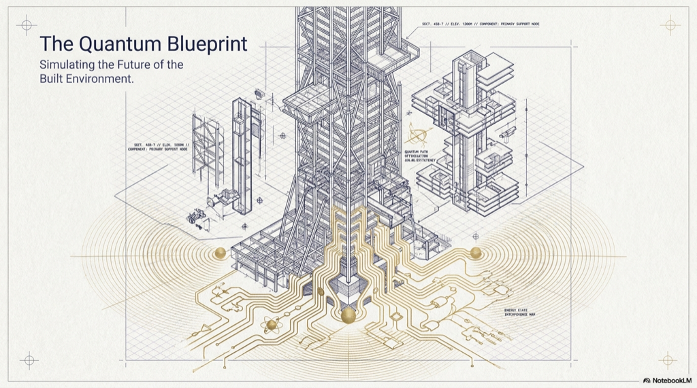

Watch the source video on YouTube → Companion dialogue summary (ChatGPT) →

Quantum machines use qubits governed by superposition and entanglement, so they explore many paths in parallel rather than only stepping through classical bits. That reflects a different model of computation, not just a faster PC. That difference matters for cryptography, chemistry and materials simulation, heavy optimization, and fundamental science, while today’s hardware is still mostly in the NISQ era: real devices exist but are noisy, fragile, and limited in scale. Societally, upside includes faster discovery in health, climate, and energy; downside includes security transitions and uneven access to capability. For architecture, engineering, and construction, long-term relevance is in high-fidelity simulation, combinatorial scheduling and logistics, materials discovery, and infrastructure-scale optimization if and when stable quantum advantage appears for those problem classes.
Main findings and arguments
What is quantum computing?
Classical computers store bits as 0 or 1. Quantum computers use qubits that can sit in combinations of states (superposition) and can be entangled, so that measuring or updating one qubit constrains others in correlated ways. Together, superposition and entanglement let a quantum processor represent and manipulate a large space of possibilities in one shot rather than iterating one classical path at a time. The video’s core point is that quantum systems are valuable because they compute differently, not merely because they run the same programs with a clock-speed boost.
Why does it matter?
The overview ties quantum computing to domains where classical brute force or approximation hits a wall: breaking or replacing certain cryptographic schemes, simulating molecules and materials, solving large optimization problems (logistics, networks, scheduling), and pushing physics- and chemistry-driven discovery. The narrative also stresses complementarity: classical stacks will remain the default; quantum is a specialized accelerator for particular structured problems.
Latest developments and current state
Present-day systems are often described as noisy intermediate-scale quantum (NISQ) devices: useful for experiments and narrow demonstrations, but sensitive to environment-induced errors and still far from fault-tolerant, million-qubit machines. Trends include growing qubit counts, corporate and government investment, and occasional claims of quantum advantage on carefully chosen benchmarks, while practical, broad impact is still unfolding and may take years.
Broader implications for society
If mature quantum hardware and algorithms arrive at scale, benefits could span medicine, climate modeling, energy, and industrial R&D in contexts where complex simulation and optimization pay off. Risks cluster around cryptography (migration to post-quantum standards), strategic inequality between states and firms with versus without access, and the need for governance as powerful optimization and cryptanalysis tools touch critical infrastructure. The societal arc resembles other general-purpose technologies: transformative upside paired with security and equity questions that have to be managed deliberately.
Relevance to architecture, engineering, and construction (AEC)
AEC is optimization- and simulation-heavy, so quantum is a long-horizon tool worth tracking even before turnkey products arrive:
- Simulation and design: richer material- and system-level models for structures, environmental performance, and building systems if quantum chemistry and PDE-style workloads gain durable advantage.
- Construction operations: large scheduling, routing, and resource-allocation problems across sites and supply chains.
- Materials innovation: discovery paths for stronger, lighter, or lower-carbon materials that today depend on expensive classical simulation.
- Infrastructure and cities: traffic, grid, and urban-scale optimization problems where classical heuristics already strain at the margin.
Near term, AEC teams still live in a classical world: the professional takeaway is to understand where quantum could eventually bite, invest in data and digital twins that will feed any future hybrid solvers, and follow post-quantum security guidance for project data and collaboration platforms.
Interactive: source video & slide deck
Prompt used (for the written synthesis): “Summarize the provided quantum computing video explaining (1) what quantum computing is, (2) why it matters, and (3) recent developments. Highlight the main arguments, societal implications, and relevance to the architecture, engineering, and construction (AEC) industry.”
Open the same overview on YouTube (starts at 1:00). The card below links out in a new tab.
 Quantum computing overview · youtube.com/watch?v=sHDWnW1fXJw (t=60s)
Quantum computing overview · youtube.com/watch?v=sHDWnW1fXJw (t=60s)
Download Week 7 deck (.pptx) Large file (~23 MB)